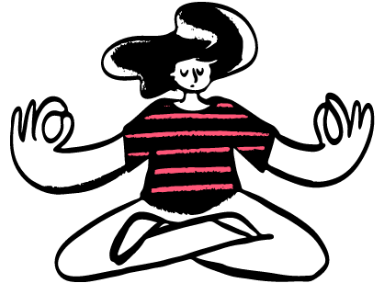
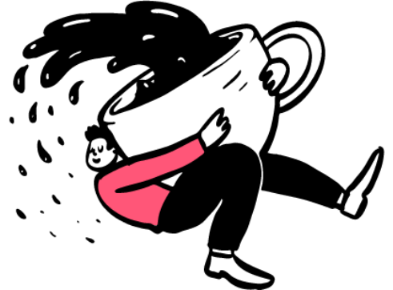
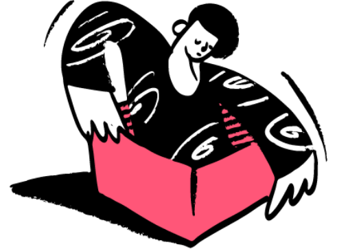

Cálculo fácil e descomplicado em poucos cliques!

Retângulo
Sobre
Os Devs
Danilo Souza
Estudante de Análise e Desenvolvimento de Sistemas na Fatec Mogi das Cruzes. Apaixonado por desafios, café e codar, de preferência tudo junto!
Raquel Barbosa
Estudante de Análise e Desenvolvimento de Sistemas na Fatec Mogi das Cruzes. Apaixonada por gatos, design, café e tecnologia, de preferência tudo junto!